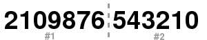

| Longueur | Type | Présence d'un checksum |
|---|---|---|
| 13 digits | numérique | oui |
L'EAN 13 est composé de 12 digits de données + 1 digit de checksum
Le calcul du digit de checksum de l'EAN 13 est très simple :
( 10 - [ (3 * Impaire + Paire) modulo 10 ] ) modulo 10
Ainsi, l'exemple donne :
donc le checksum de 210987654321 est 0
Message EAN 13 : Checksum :
Une séquence de start débute le code barres : 101
Les 13 digits vont être séparés en 2 parties, à savoir la partie gauche du 1er au 7eme digit et la partie droite du 8eme au 13eme digit
Le premier digit est utilisé pour encoder les suivants selon la table suivante :
| digit | séquence |
|---|---|
| 0 | 000000 |
| 1 | 001011 |
| 2 | 001101 |
| 3 | 001110 |
| 4 | 010011 |
| 5 | 011001 |
| 6 | 011100 |
| 7 | 010101 |
| 8 | 010110 |
| 9 | 011010 |
Ainsi pour chaque valeur du premier digit, une séquence de 6 "0" ou "1" va permettre d'encoder les 6 digits suivant selon les tables suivants :
| digit | table 0 | table 1 |
|---|---|---|
| 0 | 0001101 | 0100111 |
| 1 | 0011001 | 0110011 |
| 2 | 0010011 | 0011011 |
| 3 | 0111101 | 0100001 |
| 4 | 0100011 | 0011101 |
| 5 | 0110001 | 0111001 |
| 6 | 0101111 | 0000101 |
| 7 | 0111011 | 0010001 |
| 8 | 0110111 | 0001001 |
| 9 | 0001011 | 0010111 |
Pour l'exemple, le premier digit étant 2, les tables à utiliser pour les digit 2 à 7 seront définit par la séquence 001101 :

La partie #1 sera donc 0011001 0001101 0010111 0001001 0111011 0000101
Une séquence intermédiaire sépare les 2 parties : 01010
Les digits 8 à 13 sont simplement encodés selon la table suivante :
| digit | table 2 |
|---|---|
| 0 | 1110010 |
| 1 | 1100110 |
| 2 | 1101100 |
| 3 | 1000010 |
| 4 | 1011100 |
| 5 | 1001110 |
| 6 | 1010000 |
| 7 | 1000100 |
| 8 | 1001000 |
| 9 | 1110100 |
La partie #2 sera donc 1001110 1011100 1000010 1101100 1100110 1110010
Une séquence de stop termine le code barres : 101
Chaque élément de la séquence binaire est représenté par un espace de même largeur, qu'il s'agisse d'un "1" ou d'un "0". Les "1" sont représentés par des espaces pleins et les "0" par des espaces vides.

Veuillez saisir le code :